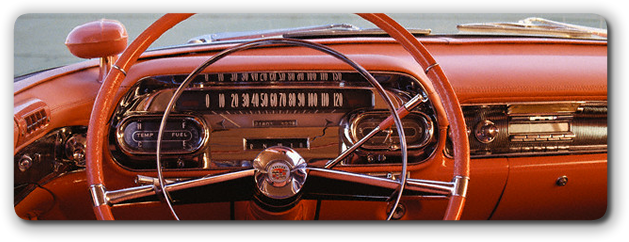
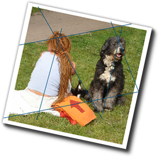
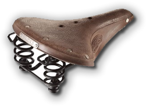
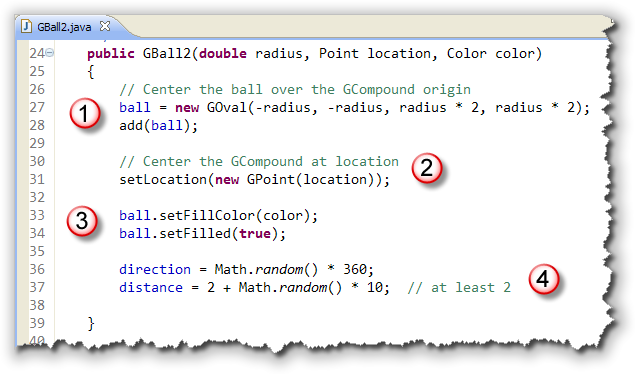
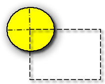
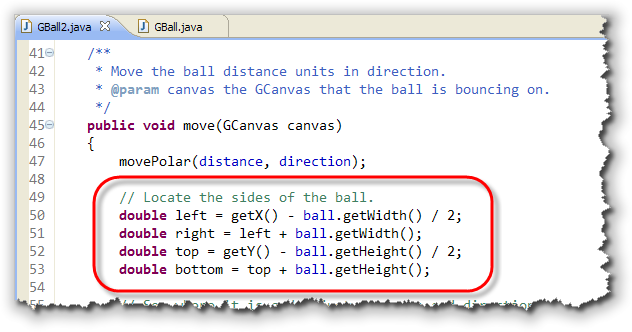
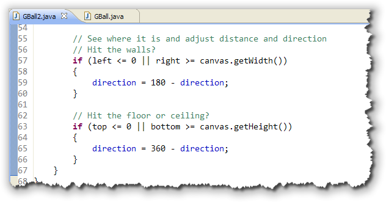

So far, it looks like inheritance
is really helpful. Extending
the
So far, it looks like inheritance
is really helpful. Extending
the GOval class allowed your new GBall
to inherit literally hundreds of methods. All for free!
That's correct, but it's not the end of the story. You may have inherited a little more than you counted on!
Consider this version of the bouncing program, PolarBounce3, that changes the size of each ball as it hits the wall. When a ball hits the side walls, we increase its height by a fraction and decrease its width, like it would in real life.
If we hit the top or bottom,
then we do the opposite:
 Unfortunately, when the program runs, the bouncing balls no longer
maintain their pristine round shape; in fact, they are no longer
really balls at all:
Unfortunately, when the program runs, the bouncing balls no longer
maintain their pristine round shape; in fact, they are no longer
really balls at all:
 This problem occurs because we've really misidentified
an is-a relationship. A
This problem occurs because we've really misidentified
an is-a relationship. A GBall really isn't
a GOval, since balls should retain their
circular shape. What we really wanted to use as a
superclass was the GCircle, but the ACM class libraries
didn't come with one, so we went ahead and used the
GOval class instead.
Unfortunately, the GOval class includes some methods
that really don't apply to GBall objects,
but, since inheritance models an is-a relationship, there
is no way to eliminate the pesky extra methods.
 Scott Meyers, in his excellent book
Effective C++, calls this the
Scott Meyers, in his excellent book
Effective C++, calls this the
- All Birds Can Fly
- Penguins are Birds
- Penguins can fl—- Uhh-oh!
problem. Meyers offers no quick fix however. In Java, as in C++, the only solution is to go back to the drawing board and revise the class relationships.
Inheritance of Implementation or Contraction
One potential solution to the "penguins can't fly" problem
is called implementation inheritance, and that's actually
what we did with the GBall class.
While you should be aware of this form of inheritance,
you should avoid using it in your designs.
For an exaggerated
example, suppose you have a class that models a virtual automobile
called, perhaps, Cadillac. This class has an exceptionally fine
stereo system, which required a lot of effort to implement and
of which you're especially proud. Now you discover that you need
to create a GiPod class, for sale over the Web:

Because you’ve already gone to all the work of creating theCadillac class, why
not just create a new subclass, and then eliminate all the methods
that have nothing to do with playing music, transforming the car
into a mere sound system?

This practice, called contraction, is an especially easy trap to fall into when you begin maintaining an existing system. Because the class hierarchy is already in place, you may feel a lot of pressure not to "tear things up."
So, in an effort to reuse the
code you’ve already written, you replace brake(),
accelerate(), and all the other "extraneous" methods
from the Cadillac class with empty braces. In
traditional computer-science terms, you replace
them with a NOP (No OPeration). You should avoid doing this
in your designs for two reasons:
- Because you're violating the substitutability rule, you
will undoubtedly break some code that relied on all
Cadillacobjects carrying out a certain set of operations. Because, according to your new hierarchy, aGiPodis-a Cadillac, you are obligated by theCadillac"contract" to perform those operations. - It’s more work than doing the right thing! If you really
want to use a
Cadillacobject as a super sound system, simply use composition: Add aCadillacobject as one of the fields in yourGiPodclass. Now you not only have avoided the semantic pitfalls of saying one thing and doing another, you’ve also saved yourself the work of overriding all those useless methods.
And that's really what's happened with our GBall. If we
were just to "NOP" setSize() and setBounds()
and the other inappropriate GOval methods, our
GBall would no longer "fit into" the GObject
family, since we wouldn't be keeping the GOval
"contract".
Let's see how we could fix this problem by using composition instead. It may look like more work, but it really is a better solution to the problem.
Introducing Composition

Inheritance is a simple and powerful way to reuse and extend existing software components. Inheritance lets you define your own version of existing classes, customized for your special needs, and you can do this with pretty much any class library, including the regular Java Foundation Class Libraries.
Suppose, for instance, that your corporate policy requires
that all applications use 14-point font in their applet's
JTextFields and 18-point bold JLabels.
Using inheritance, you can simply create a pair of new classes
by extending the JTextField and JLabel
classes, and avoid the extra work of sending the
setFont() message to every
JTextField and JLabel object in
your entire application.
Inheritance isn't the right solution for every situation,
however. What if you need a component that combines
both a JLabel and a JTextField
object? Inheritance doesn't help in this situation.
If you try to write:
public class LabeledTextField extends JLabel, JTextField
{
}
Java goes ballistic. It won't even compile your code. Java's hard-and-fast rule is that each class can extend only a single superclass.
What is Composition?
Fortunately, there is a simple solution. You can bundle both
your JLabel and your JTextField
together in a single class, making each of them
fields or instance variables in the new class.
This technique is called composition.

The idea of a composition relationship is really quite simple: In the composition relationship, an object is composed of other objects, which make up its "parts." That's why it's called (informally) a has-a relationship; because we can say that:- A car has a motor, or
- A bicycle has a seat, or
- A computer has a CPU
You've already used composition in your programs of course:
when building graphical applications or applets that contain both
JLabels and TextFields. These
components are part of your application applet; they "live"
only as long as the application lives, and they exist only to
serve the purposes of your program.
Composition and the ACM Graphics Classes
To create classes that "work together" with the ACM class libraries,
you'll have to use inheritance; only GObjects and their
subclasses can be added to the GCanvas that makes up
the central stage in an ACM GraphicsProgram. Similarly,
in the Java AWT world, only subclasses of the Component
class can be added to your applet (as we saw with the Dot
class in the last lesson).
When you use composition with the ACM graphical classes, you have three choices for your superclass:
- you can extend the
GObjectclass. This gives you the most control over the exact way that the new component works, but it requires the more work on your part. - you can extend the
GPolygonclass, using it to create new geometric shapes, like stars and hexagons. - you can extend the
GCompoundclass. This class was added to the ACM graphical classes for the sole purpose of creating new components using composition.
Let's take a look at this third option to create a GBall2 class using
the GCompound class.
The GCompound Class
As the JTF Tutorial points out, the ACM graphical shape classes
are like a set of basic building blocks that allow you to build
more complicated structures. You can think of them as the
"atoms" of the acm.graphics world.
As your programs become more complex, though, it's useful to
assemble several atomic shapes into a "molecule"
that you can then manipulate as a unit.
In the acm.graphics package, the GCompound
class provides this ability. One way to think of the
GCompound class is as the union of the
methods available in the GObject class and of those
available in the GCanvas class. As a
GObject, a GCompound responds to method
calls like setLocation and move;
as an implementer (like GCanvas) of the
GContainer interface, it supports methods like
add and remove.
You can find a list of the important GCompound
methods by browsing the
ACM Javadocs.
The GBall2 Example
You can see several GCompound example programs by
following the link to the
JTF Example Gallery page.
For our purposes, though, I want to walk through each of the steps for
creating a new "bouncing ball" class using composition.
Along the way, I'll talk about some of the features of the
GCompound class in general.
As I mentioned earlier, I'll call this version of our bouncing
ball, GBall2. Go ahead and open DrJava and then
enter the basic skeleton for the
class, similar to what we started with for GBall:
 In the starter code shown here, you can see:
In the starter code shown here, you can see:
- We've imported the
java.awtpackage (to make use of theColorclass at a minimum) as well as theacm.graphicspackage. - We've added
extends GCompoundto the class header.
Save your file and then compile it. As you'll see,
the class compiles correctly without
any additional changes. As you remember from extending the GOval
class, that means that the GCompound class must already
have a no-argument or default constructor.
GBall2 Instance Variables and Constructor
With composition, you create new classes by combining objects of existing classes. In other words, your new class contains instance variables that consist of the "parts" you want to use.
In our case, we'll use the GOval class, just as we did with
our original ball, but this time we won't extend the class, but
instead, we'll add a GOval field like this:
 Along with the
Along with the GOval instance variable, we have a
couple of doubles for distance and
direction, just like our previous version of GBall.
To initialize the instance variable, of course, we'll need a
constructor. Let's use the same constructor that we
used for the original GBall class, with a few changes.
Here's the original:
 As you can see, at a minimum we'll need to:
As you can see, at a minimum we'll need to:
- Change the name of the constructor to match the class. That's a "no-brainer".
- Initialize the
GBallobject instead of calling the superclass constructor. This is a little more complex. In the originalGBall, thelocationparameter initialized the position of the center of theGOvalon the screen. In this program, theradiusandcolorwill initialize theGOval, but thelocationwill set the position of theGCompoundsubclass,GBall2, which is a little different. - Finally, the
setFilled()andsetFillColor()are no longer inherited sinceGCompounddoesn't implement theFillableinterface. Instead, we have to apply these to theGOvalinstance variable,ball.
Here's what those changes look like when added to the
GBall2 class:

Let's walk through the changes, one by one.
The first section initializes theGOvalinstance variable. It looks a little strange at first, so make sure that you spend some time understanding what's going on. The four parameters to theGOvalconstructor arex,y,widthandheight. Bothxandyare set to a negativeradius.In other words, the upper-left corner (or origin) of the ball is moved left and up, so that the center of the ball sits on the origin of the
GCompoundobject (here represented by the dashed rectangle. Now, when theGBall2object is positioned, theGOvalwill be drawn centered on that point.In addition to positioning the
GOvalon theGCompoundobject, the oval actually has to be physically added to the surface of the component, just as if we were adding it to aGCanvas.- Since the
GBallclass extended theGOvalclass, setting the location of the ball isn't the same as setting the location of the component. In this case, thelocationparameter is used to set the location of theGBall2, not the location of theGovalit contains. (Notice that thesetLocation()method wants aGPointas a parameter. It would probably be better to make the location aGPointparameter instead of aPoint. I only left it as aPointbecause the original constructor was written that way. - Section 3 uses the same code as the original, except that
this time the
GOvalobject namedballis filled and its fill color is set, instead of the component itself. - Finally, the
directionanddistanceare initialized using exactly the same code as before.
Moving the GBall2
The code for moving the ball is almost the same as the original
GBall. The only difference is that we need to use
the bounds of the GOval to decide when to bounce
the ball. That's done by adding the code shown here to set up
some local variables:

Usingleft, right, top and bottom,
the new "bouncing" code is a little simpler than the previous version
of GBall:
Once you've finished GBall2.java, you can try out the new component using PolarBounce4.java which you can find in this chapter's code folder.

Composition Summary
- Inheritance should be used when the subclass actually is a subtype of the superclass. If there is not an is-a relationship between the subclass and the superclass you should not use inheritance.
- Because Java has only single inheritance you cannot extend multiple classes, and thus combine functionality from different classes.
- Implementation inheritance violates the is-a rule, (also known as the substitutability principle), by using contraction to remove superclass capabilities from subclass objects. This is usually done by overriding the undesired superclass methods and replacing them with NOP or empty methods.
- When you want to reuse only a portion of the implementation or interface of a class, then use composition instead of inheritance. Composition is a has-a relationship, not an is-a relationship.
- To use composition, create an instance of the class you wish to reuse as an instance variable and forward requests to that variables. This method forwarding is known as delegation.
- The ACM
GCompoundclass is designed for creating new graphical components using the technique of composition, along with inheritance.